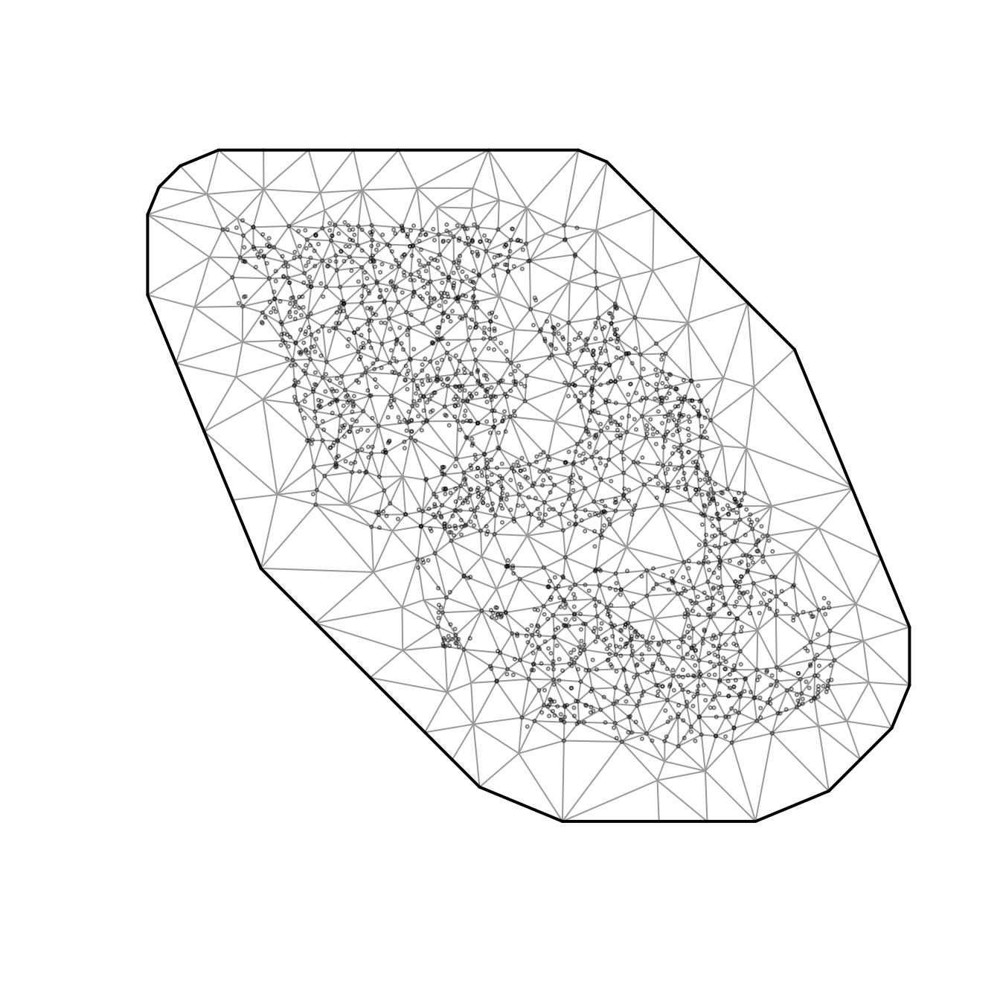
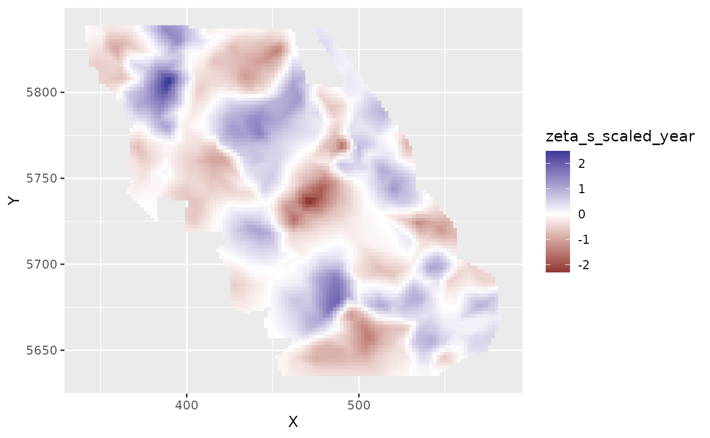
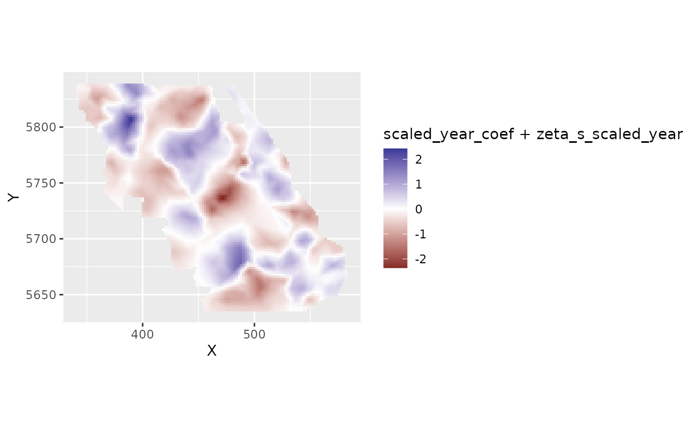
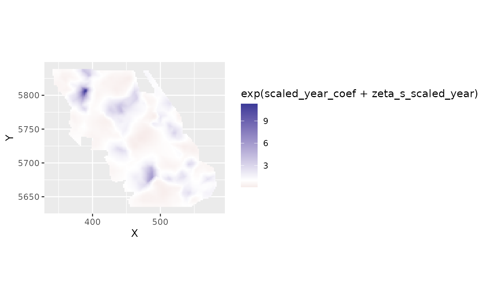
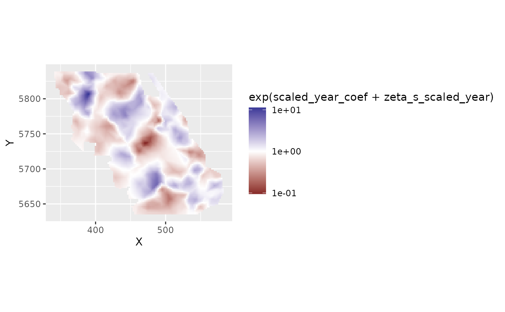
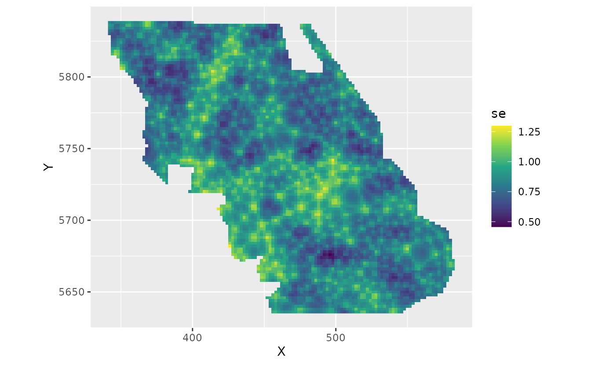

Fitting spatial trend models with sdmTMB
2025-11-22
Source:vignettes/articles/spatial-trend-models.Rmd
spatial-trend-models.RmdIf the code in this vignette has not been evaluated, a rendered version is available on the documentation site under ‘Articles’.
Using the built-in British Columbia Queen Charlotte Sound Pacific Cod dataset, we might be interested in fitting a model that describes spatially varying trends through time. The data are as follows:
- There are columns for depth and depth squared.
- Depth was centred and scaled by its standard deviation and we’ve included those in the data frame so that they could be used to similarly scale the prediction grid.
- The density units should be kg/km2.
- Here, X and Y are coordinates in UTM zone 9.

We will fit a model that includes an overall intercept, a slope for
‘year’, an intercept spatial random field, and another random field for
spatially varying slopes that represent temporal trends that vary
spatially (spatial_varying argument).
First, we will set up a column for time that is centered to help break correlation with the intercept and help estimation (and interpretation of the intercept) and we will scale the year values so that a unit of change is a decade instead of a year. This is likely more interpretable and can help with estimation by keeping the coefficients on a reasonable scale.
d <- pcod
d$scaled_year <- (pcod$year - mean(pcod$year)) / 10
unique(d$scaled_year)
#> [1] -0.64022399 -0.54022399 -0.44022399 -0.24022399 -0.04022399 0.15977601
#> [7] 0.35977601 0.55977601 0.75977601Now we will fit a model using
spatial_varying ~ 0 + scaled_year. The 0 +
drops the intercept, which is already present due to
spatial = "on", which is the default.
fit <- sdmTMB(
density ~ scaled_year,
data = d,
mesh = pcod_spde,
family = tweedie(link = "log"),
spatial = "on",
spatial_varying = ~ 0 + scaled_year
)
print(fit)
#> Spatial model fit by ML ['sdmTMB']
#> Formula: density ~ scaled_year
#> Mesh: pcod_spde (isotropic covariance)
#> Data: d
#> Family: tweedie(link = 'log')
#>
#> Conditional model:
#> coef.est coef.se
#> (Intercept) 2.26 0.33
#> scaled_year -0.06 0.21
#>
#> Dispersion parameter: 11.77
#> Tweedie p: 1.52
#> Matérn range: 20.50
#> Spatial SD: 2.40
#> Spatially varying coefficient SD (scaled_year): 1.23
#> ML criterion at convergence: 6406.405
#>
#> See ?tidy.sdmTMB to extract these values as a data frame.
sanity(fit)
#> ✔ Non-linear minimizer suggests successful convergence
#> ✔ Hessian matrix is positive definite
#> ✔ No extreme or very small eigenvalues detected
#> ✔ No gradients with respect to fixed effects are >= 0.001
#> ✔ No fixed-effect standard errors are NA
#> ✔ No standard errors look unreasonably large
#> ✔ No sigma parameters are < 0.01
#> ✔ No sigma parameters are > 100
#> ✔ Range parameter doesn't look unreasonably largeWe have not included spatiotemporal random fields for this example for simplicity, but they could also be included.
Let’s extract some parameter estimates. Look for sigma_Z
coefficients:
tidy(fit, conf.int = TRUE)
#> # A tibble: 2 × 5
#> term estimate std.error conf.low conf.high
#> <chr> <dbl> <dbl> <dbl> <dbl>
#> 1 (Intercept) 2.26 0.326 1.62 2.90
#> 2 scaled_year -0.0632 0.205 -0.465 0.339
tidy(fit, "ran_pars", conf.int = TRUE)
#> # A tibble: 5 × 5
#> term estimate std.error conf.low conf.high
#> <chr> <dbl> <dbl> <dbl> <dbl>
#> 1 range 20.5 2.49 16.2 26.0
#> 2 phi 11.8 0.394 11.0 12.6
#> 3 sigma_O 2.40 0.175 2.08 2.76
#> 4 sigma_Z 1.23 0.180 0.925 1.64
#> 5 tweedie_p 1.52 0.0111 1.50 1.54Let’s look at the predictions and estimates of the spatially varying coefficients on a grid. First, we will create a small function to help with plotting:
plot_map_raster <- function(dat, column = est) {
ggplot(dat, aes(X, Y, fill = {{ column }})) +
geom_raster() +
coord_fixed() +
scale_fill_gradient2()
}We need to predict on a grid to make our visualizations. We also need
to add a column for scaled_year to match the fitting. Make
sure you scale based on the same values! Here, that means using the mean
from our fitted data and turning years into decades.
nd <- replicate_df(qcs_grid, "year", unique(pcod$year))
nd$scaled_year <- (nd$year - mean(pcod$year)) / 10
pred <- predict(fit, newdata = nd)Let’s look at the spatial trends. The zeta_s_scaled_year
in the predictions are values from a random field describing deviations
from the overall effect of year_scaled on species density.
These are in link (log) space. These are the spatially varying
coefficients.
plot_map_raster(pred, zeta_s_scaled_year)
If we wanted to get at the actual slope of scaled_year
in space, we would also have to add on the main overall (fixed effect)
coefficient.
coefs <- tidy(fit, conf.int = TRUE)
scaled_year_coef <- coefs$estimate[coefs$term == "scaled_year"]
scaled_year_coef
#> [1] -0.0632089
exp(scaled_year_coef)
#> [1] 0.9387474Our main effect tells us that the overall linear trend of density has been a multiplicative factor of 0.94 per decade. Conversely, the overall trend has been a decline of 6% per decade.
We can add this overall effect to the spatial deviations from this effect to get the spatially varying trend:
plot_map_raster(pred, scaled_year_coef + zeta_s_scaled_year)
We could put those slopes back into natural space:
plot_map_raster(pred, exp(scaled_year_coef + zeta_s_scaled_year)) +
scale_fill_gradient2(midpoint = 1)
#> Scale for fill is already present.
#> Adding another scale for fill, which will replace the existing scale.
Here, 2, for example, means a 2-fold change in density in that location per decade.
We might prefer to log transform the color scale. This gets us back to the plot in log space but with values on the colour legend that represent (multiplicative) values in natural space.
plot_map_raster(pred, exp(scaled_year_coef + zeta_s_scaled_year)) +
scale_fill_gradient2(midpoint = 0, trans = "log10")
#> Scale for fill is already present.
#> Adding another scale for fill, which will replace the existing scale.
The fastest way to get uncertainty on this spatially varying coefficient is with draws from the joint precision matrix of the parameters:
set.seed(82938)
psim <- predict(fit, newdata = nd, nsim = 200, sims_var = "zeta_s")
pred$se <- apply(psim, 1, sd)
plot_map_raster(pred, se) +
scale_fill_viridis_c()
We can see a visual pattern of the SPDE mesh in this plot. The uncertainty standard error is most accurate at the nodes (vertices, knots) of the mesh.